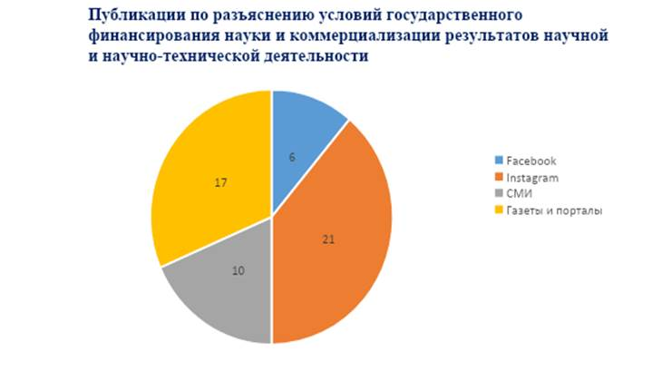

5 ИНФОРМАЦИОННОЕ СОПРОВОЖДЕНИЕ
Данный отчет представляет собой обзор и разъяснение условий, связанных с государственными инструментами финансирования научных исследований и коммерциализации результатов научной и научно-технической деятельности в Республике Казахстан (РК).
Целью данного отчета является предоставление структурированной информации заинтересованным сторонам, включая исследователей, академические учреждения, индустриальные предприятия и государственные органы, о доступных механизмах финансирования и схемах коммерциализации научных достижений в РК.
Разъяснение условий, связанных с государственными инструментами финансирования научных исследований и коммерциализации результатов научной и научно-технической деятельности в Республике Казахстан, имеет важное значение для стимулирования инноваций, развития науки и экономики страны. Это обеспечивает ясность и прозрачность в использовании ресурсов, способствуя эффективной работе и сотрудничеству между научными учреждениями, индустрией и государством, что в итоге способствует прогрессу и повышению конкурентоспособности национальной научной сферы.
Методы распространения информации:
• СМИ (местные, региональные и республиканские телеканалы), газеты (печатные издания), интернет порталы, информационные агентства, социальные медиа и онлайн-платформы: активно использовались популярные социальные сети (такие как Facebook, Instagram) для распространения информации о программах финансирования, проведении мероприятий и обновлении доступных ресурсов.
• Официальный веб сайт академии и рассылки: регулярно освещались на сайте Академии и электронные рассылки с обновлениями о новых грантах, конкурсах и возможностях финансирования, предназначенные заинтересованным сторонам.
• Партнерства и сотрудничество: установили партнерские отношения с университетами и научными центрами для расширения охвата целевой аудитории и обмена информацией.
• Локальные встречи и научные мероприятия: проведены локальные мероприятия, встречи, семинары и круглые столы с участием экспертов для более непосредственного и глубокого взаимодействия с заинтересованными группами, результаты работ этих встреч и научных мероприятии были отражены в разных платформах СМИ страны.
Обзор публикаций:
1. В государственных телеканалах (10 интервью и новостей включая Хабар, Қазақстан, Хабар 24, Алматы, Атамекен бизнес, Астана, Евразия 1): Данные телеканалы в СМИ активно поддерживали все пресс-анонсы и освещали новости, связанные с государственными инструментами финансирования научных исследований и коммерциализации научно-технической деятельности в РК. В новостных эфирах этих телеканалов были разъяснены среди заинтересованных сторон об условиях государственных инструментах финансирования науки, даны интервью вице-президентов, сотрудников Академии и АО «Фонда Науки» об условиях государственных инструментах финансирования науки и коммерциализации результатов научной и научно-технической деятельности.
2. В газетах и информационных порталах (Егемен Казакстан, КазПравда, Айкын, Неге и другие): Были опубликованы 17 подробных статей и материалов о государственных инструментах финансирования научных исследований, предназначенные для разъяснения и уточнения условий в различных изданиях, таких как "Егемен Казакстан", "КазПравда", "Айкын", "Ана тілі", "Алматы Ақшамы", "Неге" и в других изданиях и информационных порталах.
3. В социальных сетях (Instagram 21 пост, Facebook 6 постов) были опубликованы информационные посты, визуально иллюстрирующие тему государственных инструментов финансирования науки и коммерциализации результатов.

Рисунок 5.1.1
Анализ и выводы:
● Медийное покрытие: Участие в таких ведущих СМИ как Хабар, Қазақстан, Хабар 24 и других привлекло большое внимание к теме и увеличило информированность общественности.
● Разнообразие подходов: Организация мероприятий в социальных сетях, создание визуального контента на Instagram, публикации в газетах и порталах — это разнообразие подходов, позволяющее достичь разных аудиторий и предоставить информацию в различных форматах.
● Обратная связь: Отчет говорит об успешности мероприятий, так как они были осуществлены с активной поддержкой СМИ и имели значительное покрытие, что подразумевает интерес и важность данной темы для общества.
● Территориальный охват: Всю территорию Республики Казахстан, включая различные регионы и города.
● Количество людей и организаций: В результате были достигнуты больше несколько миллион просмотров и охватов, включая ученых, исследователей, предпринимателей, стейкхолдеров и представителей различных бизнес сред.
● Эффект и воздействие: Активное участие СМИ и различных медийных платформ привлекло внимание к теме финансирования научных исследований и их коммерциализации.
Общий анализ публикаций в различных медиа показывает, что тема государственного финансирования науки и коммерциализации научных результатов вызывает значительный интерес в обществе. Социальные платформы, такие как Instagram и Facebook, обеспечивают пространство для более непосредственного взаимодействия и обсуждения, в то время как СМИ и газеты предоставляют более углубленную информацию и анализ для широкой аудитории.
Заключение. Было опубликовано в общей сложности 54 публикации, из них: в государственных телеканалах10 (Хабар, Қазақстан, Хабар 24, Алматы, Атамекен бизнес, Астана, Евразия 1), в газетах и информационных порталах 17 подробных статей и материалов о государственных инструментах финансирования научных исследований, предназначенные для разъяснения и уточнения условий в различных изданиях, таких как "Егемен Казакстан", "КазПравда", "Айкын", "Ана тілі", "Алматы Ақшамы", "Неге" и в других изданиях и информационных порталах, социальных сетях были опубликованы информационных 27 постов, визуально иллюстрирующие тему государственных инструментов финансирования науки и коммерциализации результатов.
Информационно-аналитическое сопровождение научных исследований в сфере финансирования, коммерциализации результатов научной и научно-технической деятельности является ключевым фактором для эффективного развития науки и ее превращения в инновации. В рамках этого подхода было опубликовано значительное количество материалов – 54 публикации в СМИ. Подготовленный отчет с приложением, содержащий наименования, скриншоты и ссылки на эти материалы, обеспечивающий полный доступ к информациям.